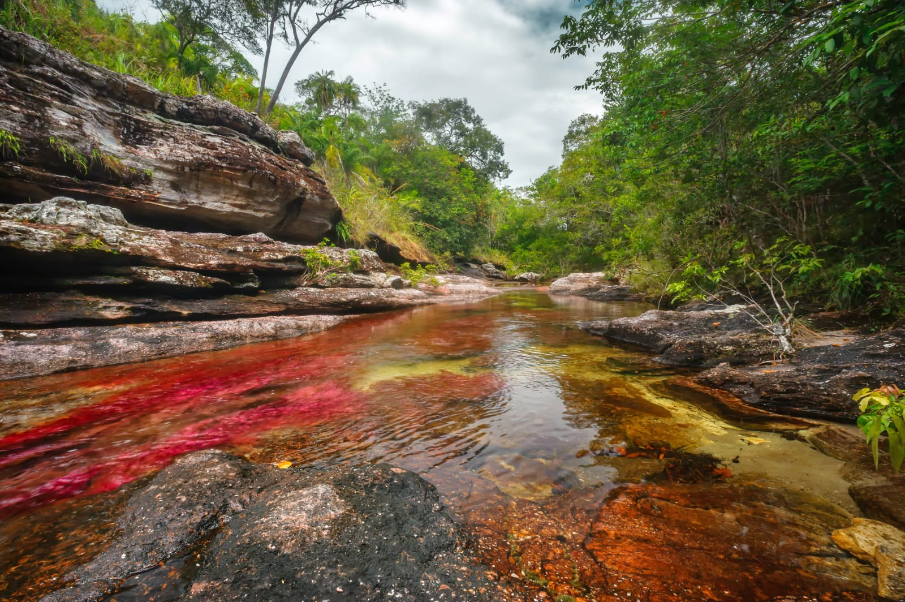
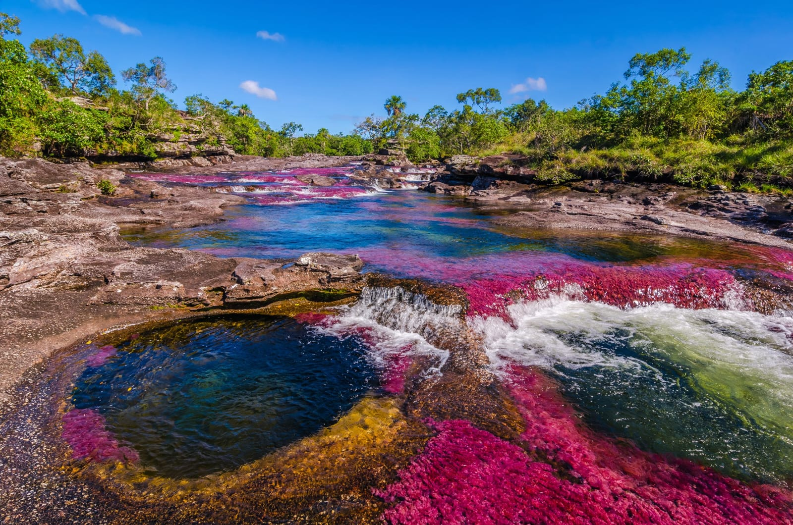

Senderismo
Recorre los senderos y descubre los diferentes paisajes naturales.

Caño Cristales es uno de los destinos naturales más sorprendentes de Colombia. Es conocido como el río de los siete colores debido a las tonalidades que aparecen en sus aguas.
Se encuentra en la Sierra de la Macarena, en el departamento del Meta. Sus aguas, formaciones rocosas y paisajes naturales crean un escenario único que atrae visitantes de todo el mundo.

La Macarena, Meta
Conocido como el río de los siete colores
Flora y fauna diversa
Colores y formaciones naturales
Recorre los senderos y descubre los diferentes paisajes naturales.
Captura los colores del río y sus increíbles formaciones.
Conoce la biodiversidad y los paisajes de la Sierra de la Macarena.
Caño Cristales ofrece una experiencia única gracias a sus colores, sus aguas cristalinas y la belleza de sus paisajes. Es un destino perfecto para quienes desean conocer una de las maravillas naturales más especiales de Colombia.